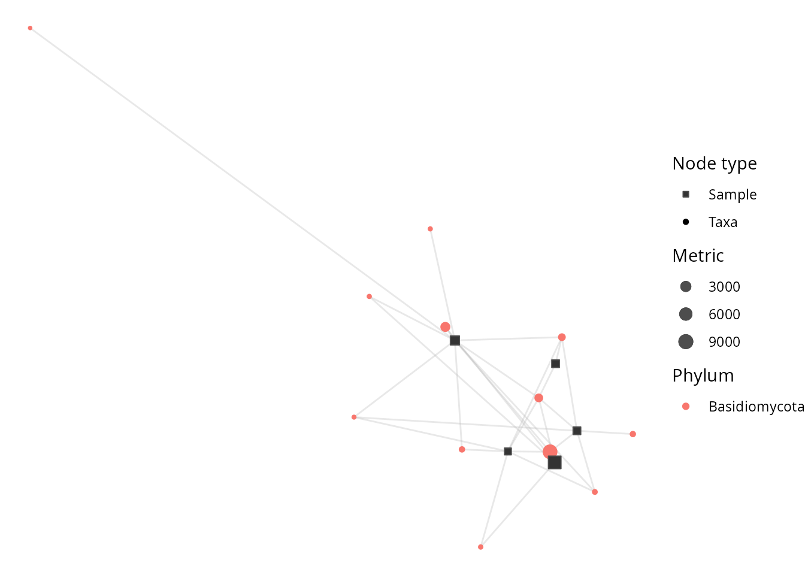

What netaipq is for
netaipq is the pqverse home for
networks and machine-learning analyses of phyloseq
objects: co-occurrence and association networks, bipartite-network
visualisation, supervised classification, indicator-species and
differential-abundance methods, and other genuinely new analysis
methods that go beyond a simple ggplot2 wrapper.
By absorbing any feature that would add a brand-new machine-learning,
network, graph, or statistical-analysis dependency, netaipq
keeps MiscMetabar
lean. Pure ggplot2 visualisation belongs in
ggplotpq; cross-study comparators belong in
comparpq.
Installation
# install.packages("remotes")
remotes::install_github("adrientaudiere/netaipq")A worked example: bipartite networks
A bipartite network links two kinds of nodes — here
samples and taxa — with an edge
whenever a taxon occurs in a sample. bipartite_network_pq()
builds and draws this network from a phyloseq object.
For a readable figure we take a few samples and the commonest taxa
from data_fungi_mini (shipped with
MiscMetabar).
library(netaipq)
data(data_fungi_mini)
ps <- prune_samples(sample_names(data_fungi_mini)[1:5], data_fungi_mini)
ps <- clean_pq(ps, silent = TRUE)
top_taxa <- names(sort(taxa_sums(ps), decreasing = TRUE))[1:20]
ps <- prune_taxa(top_taxa, ps)
ps
#> phyloseq-class experiment-level object
#> otu_table() OTU Table: [ 12 taxa and 5 samples ]
#> sample_data() Sample Data: [ 5 samples by 7 sample variables ]
#> tax_table() Taxonomy Table: [ 12 taxa by 12 taxonomic ranks ]
#> refseq() DNAStringSet: [ 12 reference sequences ]
bipartite_network_pq(ps, taxa_color = "Phylum", seed = 1)
Taxa nodes are coloured by their Phylum; edges connect
each taxon to the samples it was observed in. The function returns a
ggplot object, so you can post-process it with any
ggplot2 layer or theme — for example those provided by
ggplotpq.
Where to go next
- The function
reference lists every argument of
bipartite_network_pq(), including node sizing, layout, and label control. -
netaipqis in active development: network, machine-learning, and causal-inference methods are being added. See the ROADMAP for what is coming next.